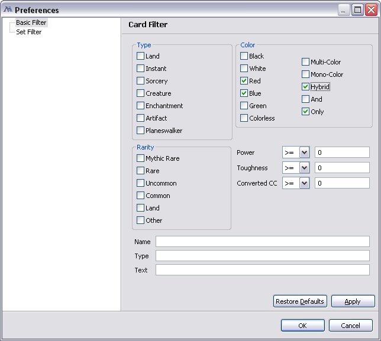

For example if you select color Blue and White and Type Creature and Enchantment, you will get all creates and all enchantments that are Blue or White (including multicolors). Text search fields would split you text by words and search text using AND for all worlds you enter in the same line, disregarding order. Text search field provide content assist, i.e. they would show possible word you want to enter while you typing. To search for symbols in Text field (such as mana and tap symbols) use the following table:| Symbol | Search as |
|---|---|
| {R} | |
| {B} | |
| {U} | |
| {G} | |
| {W} | |
| Tap | {T} |
| Untap | {Q} |
| 1 mana | {1} also {2},{3},...,{12} |
| Black or Green mana | {B/G} also {W/B},{U/R},... |